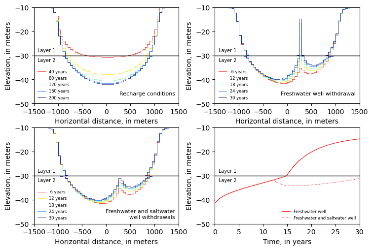
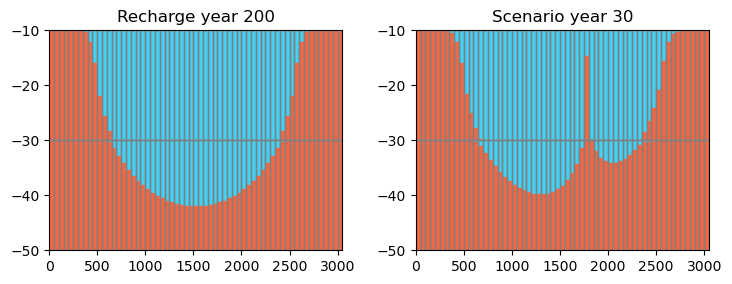

Note
SWI2 Example 4. Upconing Below a Pumping Well in a Two-Aquifer Island System
This example problem is the fourth example problem in the SWI2 documentation (https://pubs.usgs.gov/tm/6a46/) and simulates transient movement of the freshwater-seawater interface beneath an island in response to recharge and groundwater withdrawals. The island is 2,050$:nbsphinx-math:`times`$2,050 m and consists of two 20-m thick aquifers that extend below sea level. The aquifers are confined, storage changes are not considered (all MODFLOW stress periods are steady-state), and the top and bottom of each aquifer is horizontal. The top of the upper aquifer and the bottom of the lower aquifer are impermeable.
The domain is discretized into 61 columns, 61 rows, and 2 layers, with respective cell dimensions of 50 m (DELR), 50 m (DELC), and 20 m. A total of 230 years is simulated using three stress periods with lengths of 200, 12, and 18 years, with constant time steps of 0.2, 0.1, and 0.1 years, respectively.
The horizontal and vertical hydraulic conductivity of both aquifers are 10 m/d and 0.2 m/d, respectively. The effective porosity is 0.2 for both aquifers. The model is extended 500 m offshore along all sides and the ocean boundary is represented as a general head boundary condition (GHB) in model layer 1. A freshwater head of 0 m is specified at the ocean bottom in all general head boundaries. The GHB conductance that controls outflow from the aquifer into the ocean is 62.5 m\(^{2}\)/d and corresponds to a leakance of 0.025 d\(^{-1}\) (or a resistance of 40 days).
The groundwater is divided into a freshwater zone and a seawater zone, separated by an active ZETA surface between the zones (NSRF=1) that approximates the 50-percent seawater salinity contour. Fluid density is represented using the stratified density option (ISTRAT=1). The dimensionless density difference (\(\nu\)) between freshwater and saltwater is 0.025. The tip and toe tracking parameters are a TOESLOPE and TIPSLOPE of 0.005, a default ALPHA of 0.1, and a default
BETA of 0.1. Initially, the interface between freshwater and saltwater is 1 m below land surface on the island and at the top of the upper aquifer offshore. The SWI2 ISOURCE parameter is set to -2 in cells having GHBs so that water that infiltrates into the aquifer from the GHB cells is saltwater (zone 2), whereas water that flows out of the model at the GHB cells is identical to water at the top of the aquifer. ISOURCE in layer 2, row 31, column 36 is set to 2 so that a saltwater
well may be simulated in the third stress period of simulation 2. In all other cells, the SWI2 ISOURCE parameter is set to 0, indicating boundary conditions have water that is identical to water at the top of the aquifer and can be either freshwater or saltwater, depending on the elevation of the active ZETA surface in the cell.
A constant recharge rate of 0.4 millimeters per day (mm/d) is used in all three stress periods. The development of the freshwater lens is simulated for 200 years, after which a pumping well having a withdrawal rate of 250 m\(^3\)/d is started in layer 1, row 31, column 36. For the first simulation (simulation 1), the well pumps for 30 years, after which the interface almost reaches the top of the upper aquifer layer. In the second simulation (simulation 2), an additional well withdrawing saltwater at a rate of 25 m\(^3\)/d is simulated below the freshwater well in layer 2 , row 31, column 36, 12 years after the freshwater groundwater withdrawal begins in the well in layer 1. The saltwater well is intended to prevent the interface from upconing into the upper aquifer (model layer).
Import numpy and matplotlib, set all figures to be inline, import flopy.modflow and flopy.utils.
[1]:
import os
import sys
from tempfile import TemporaryDirectory
import numpy as np
import matplotlib as mpl
import matplotlib.pyplot as plt
# run installed version of flopy or add local path
try:
import flopy
except:
fpth = os.path.abspath(os.path.join("..", ".."))
sys.path.append(fpth)
import flopy
print(sys.version)
print("numpy version: {}".format(np.__version__))
print("matplotlib version: {}".format(mpl.__version__))
print("flopy version: {}".format(flopy.__version__))
3.10.10 | packaged by conda-forge | (main, Mar 24 2023, 20:08:06) [GCC 11.3.0]
numpy version: 1.24.3
matplotlib version: 3.7.1
flopy version: 3.3.7
Define model name of your model and the location of MODFLOW executable. All MODFLOW files and output will be stored in the subdirectory defined by the workspace. Create a model named ml and specify that this is a MODFLOW-2005 model.
[2]:
# Set name of MODFLOW exe
# assumes executable is in users path statement
exe_name = "mf2005"
temp_dir = TemporaryDirectory()
workspace = temp_dir.name
Define the number of layers, rows and columns. The heads are computed quasi-steady state (hence a steady MODFLOW run) while the interface will move. There are three stress periods with a length of 200, 12, and 18 years and 1,000, 120, and 180 steps.
[3]:
ncol = 61
nrow = 61
nlay = 2
nper = 3
perlen = [365.25 * 200.0, 365.25 * 12.0, 365.25 * 18.0]
nstp = [1000, 120, 180]
save_head = [200, 60, 60]
steady = True
Specify the cell size along the rows (delr) and along the columns (delc) and the top and bottom of the aquifer for the DIS package.
[4]:
# dis data
delr, delc = 50.0, 50.0
botm = np.array([-10.0, -30.0, -50.0])
Define the IBOUND array and starting heads for the BAS package. The corners of the model are defined to be inactive.
[5]:
# bas data
# ibound - active except for the corners
ibound = np.ones((nlay, nrow, ncol), dtype=int)
ibound[:, 0, 0] = 0
ibound[:, 0, -1] = 0
ibound[:, -1, 0] = 0
ibound[:, -1, -1] = 0
# initial head data
ihead = np.zeros((nlay, nrow, ncol), dtype=float)
Define the layers to be confined and define the horizontal and vertical hydraulic conductivity of the aquifer for the LPF package.
[6]:
# lpf data
laytyp = 0
hk = 10.0
vka = 0.2
Define the boundary condition data for the model
[7]:
# boundary condition data
# ghb data
colcell, rowcell = np.meshgrid(np.arange(0, ncol), np.arange(0, nrow))
index = np.zeros((nrow, ncol), dtype=int)
index[:, :10] = 1
index[:, -10:] = 1
index[:10, :] = 1
index[-10:, :] = 1
nghb = np.sum(index)
lrchc = np.zeros((nghb, 5))
lrchc[:, 0] = 0
lrchc[:, 1] = rowcell[index == 1]
lrchc[:, 2] = colcell[index == 1]
lrchc[:, 3] = 0.0
lrchc[:, 4] = 50.0 * 50.0 / 40.0
# create ghb dictionary
ghb_data = {0: lrchc}
# recharge data
rch = np.zeros((nrow, ncol), dtype=float)
rch[index == 0] = 0.0004
# create recharge dictionary
rch_data = {0: rch}
# well data
nwells = 2
lrcq = np.zeros((nwells, 4))
lrcq[0, :] = np.array((0, 30, 35, 0))
lrcq[1, :] = np.array([1, 30, 35, 0])
lrcqw = lrcq.copy()
lrcqw[0, 3] = -250
lrcqsw = lrcq.copy()
lrcqsw[0, 3] = -250.0
lrcqsw[1, 3] = -25.0
# create well dictionary
base_well_data = {0: lrcq, 1: lrcqw}
swwells_well_data = {0: lrcq, 1: lrcqw, 2: lrcqsw}
[8]:
# swi2 data
nadptmx = 10
nadptmn = 1
nu = [0, 0.025]
numult = 5.0
toeslope = nu[1] / numult # 0.005
tipslope = nu[1] / numult # 0.005
z1 = -10.0 * np.ones((nrow, ncol))
z1[index == 0] = -11.0
z = np.array([[z1, z1]])
iso = np.zeros((nlay, nrow, ncol), dtype=int)
iso[0, :, :][index == 0] = 1
iso[0, :, :][index == 1] = -2
iso[1, 30, 35] = 2
ssz = 0.2
# swi2 observations
obsnam = ["layer1_", "layer2_"]
obslrc = [[0, 30, 35], [1, 30, 35]]
nobs = len(obsnam)
iswiobs = 1051
Create output control (OC) data using words
[9]:
# oc data
spd = {
(0, 199): ["print budget", "save head"],
(0, 200): [],
(0, 399): ["print budget", "save head"],
(0, 400): [],
(0, 599): ["print budget", "save head"],
(0, 600): [],
(0, 799): ["print budget", "save head"],
(0, 800): [],
(0, 999): ["print budget", "save head"],
(1, 0): [],
(1, 59): ["print budget", "save head"],
(1, 60): [],
(1, 119): ["print budget", "save head"],
(1, 120): [],
(2, 0): [],
(2, 59): ["print budget", "save head"],
(2, 60): [],
(2, 119): ["print budget", "save head"],
(2, 120): [],
(2, 179): ["print budget", "save head"],
}
Create the model with the freshwater well (Simulation 1)
[10]:
modelname = "swiex4_s1"
ml = flopy.modflow.Modflow(
modelname, version="mf2005", exe_name=exe_name, model_ws=workspace
)
discret = flopy.modflow.ModflowDis(
ml,
nlay=nlay,
nrow=nrow,
ncol=ncol,
laycbd=0,
delr=delr,
delc=delc,
top=botm[0],
botm=botm[1:],
nper=nper,
perlen=perlen,
nstp=nstp,
)
bas = flopy.modflow.ModflowBas(ml, ibound=ibound, strt=ihead)
lpf = flopy.modflow.ModflowLpf(ml, laytyp=laytyp, hk=hk, vka=vka)
wel = flopy.modflow.ModflowWel(ml, stress_period_data=base_well_data)
ghb = flopy.modflow.ModflowGhb(ml, stress_period_data=ghb_data)
rch = flopy.modflow.ModflowRch(ml, rech=rch_data)
swi = flopy.modflow.ModflowSwi2(
ml,
nsrf=1,
istrat=1,
toeslope=toeslope,
tipslope=tipslope,
nu=nu,
zeta=z,
ssz=ssz,
isource=iso,
nsolver=1,
nadptmx=nadptmx,
nadptmn=nadptmn,
nobs=nobs,
iswiobs=iswiobs,
obsnam=obsnam,
obslrc=obslrc,
iswizt=55,
)
oc = flopy.modflow.ModflowOc(ml, stress_period_data=spd)
pcg = flopy.modflow.ModflowPcg(
ml, hclose=1.0e-6, rclose=3.0e-3, mxiter=100, iter1=50
)
ModflowSwi2: specification of nobs is deprecated.
Write the simulation 1 MODFLOW input files and run the model
[11]:
ml.write_input()
ml.run_model(silent=True)
[11]:
(True, [])
Create the model with the saltwater well (Simulation 2)
[12]:
modelname2 = "swiex4_s2"
ml2 = flopy.modflow.Modflow(
modelname2, version="mf2005", exe_name=exe_name, model_ws=workspace
)
discret = flopy.modflow.ModflowDis(
ml2,
nlay=nlay,
nrow=nrow,
ncol=ncol,
laycbd=0,
delr=delr,
delc=delc,
top=botm[0],
botm=botm[1:],
nper=nper,
perlen=perlen,
nstp=nstp,
)
bas = flopy.modflow.ModflowBas(ml2, ibound=ibound, strt=ihead)
lpf = flopy.modflow.ModflowLpf(ml2, laytyp=laytyp, hk=hk, vka=vka)
wel = flopy.modflow.ModflowWel(ml2, stress_period_data=swwells_well_data)
ghb = flopy.modflow.ModflowGhb(ml2, stress_period_data=ghb_data)
rch = flopy.modflow.ModflowRch(ml2, rech=rch_data)
swi = flopy.modflow.ModflowSwi2(
ml2,
nsrf=1,
istrat=1,
toeslope=toeslope,
tipslope=tipslope,
nu=nu,
zeta=z,
ssz=ssz,
isource=iso,
nsolver=1,
nadptmx=nadptmx,
nadptmn=nadptmn,
nobs=nobs,
iswiobs=iswiobs,
obsnam=obsnam,
obslrc=obslrc,
iswizt=55,
)
oc = flopy.modflow.ModflowOc(ml2, stress_period_data=spd)
pcg = flopy.modflow.ModflowPcg(
ml2, hclose=1.0e-6, rclose=3.0e-3, mxiter=100, iter1=50
)
ModflowSwi2: specification of nobs is deprecated.
Write the simulation 2 MODFLOW input files and run the model
[13]:
ml2.write_input()
ml2.run_model(silent=True)
[13]:
(True, [])
Load the simulation 1 ZETA data and ZETA observations.
[14]:
# read base model zeta
zfile = flopy.utils.CellBudgetFile(
os.path.join(ml.model_ws, modelname + ".zta")
)
kstpkper = zfile.get_kstpkper()
zeta = []
for kk in kstpkper:
zeta.append(zfile.get_data(kstpkper=kk, text="ZETASRF 1")[0])
zeta = np.array(zeta)
# read swi obs
zobs = np.genfromtxt(
os.path.join(ml.model_ws, modelname + ".zobs.out"), names=True
)
Load the simulation 2 ZETA data and ZETA observations.
[15]:
# read saltwater well model zeta
zfile2 = flopy.utils.CellBudgetFile(
os.path.join(ml2.model_ws, modelname2 + ".zta")
)
kstpkper = zfile2.get_kstpkper()
zeta2 = []
for kk in kstpkper:
zeta2.append(zfile2.get_data(kstpkper=kk, text="ZETASRF 1")[0])
zeta2 = np.array(zeta2)
# read swi obs
zobs2 = np.genfromtxt(
os.path.join(ml2.model_ws, modelname2 + ".zobs.out"), names=True
)
Create arrays for the x-coordinates and the output years
[16]:
x = np.linspace(-1500, 1500, 61)
xcell = np.linspace(-1500, 1500, 61) + delr / 2.0
xedge = np.linspace(-1525, 1525, 62)
years = [40, 80, 120, 160, 200, 6, 12, 18, 24, 30]
Define figure dimensions and colors used for plotting ZETA surfaces
[17]:
# figure dimensions
fwid, fhgt = 8.00, 5.50
flft, frgt, fbot, ftop = 0.125, 0.95, 0.125, 0.925
# line color definition
icolor = 5
colormap = plt.cm.jet # winter
cc = []
cr = np.linspace(0.9, 0.0, icolor)
for idx in cr:
cc.append(colormap(idx))
Recreate Figure 9 from the SWI2 documentation (https://pubs.usgs.gov/tm/6a46/).
[18]:
plt.rcParams.update({"legend.fontsize": 6, "legend.frameon": False})
fig = plt.figure(figsize=(fwid, fhgt), facecolor="w")
fig.subplots_adjust(
wspace=0.25, hspace=0.25, left=flft, right=frgt, bottom=fbot, top=ftop
)
# first plot
ax = fig.add_subplot(2, 2, 1)
# axes limits
ax.set_xlim(-1500, 1500)
ax.set_ylim(-50, -10)
for idx in range(5):
# layer 1
ax.plot(
xcell,
zeta[idx, 0, 30, :],
drawstyle="steps-mid",
linewidth=0.5,
color=cc[idx],
label="{:2d} years".format(years[idx]),
)
# layer 2
ax.plot(
xcell,
zeta[idx, 1, 30, :],
drawstyle="steps-mid",
linewidth=0.5,
color=cc[idx],
label="_None",
)
ax.plot([-1500, 1500], [-30, -30], color="k", linewidth=1.0)
# legend
plt.legend(loc="lower left")
# axes labels and text
ax.set_xlabel("Horizontal distance, in meters")
ax.set_ylabel("Elevation, in meters")
ax.text(
0.025,
0.55,
"Layer 1",
transform=ax.transAxes,
va="center",
ha="left",
size="7",
)
ax.text(
0.025,
0.45,
"Layer 2",
transform=ax.transAxes,
va="center",
ha="left",
size="7",
)
ax.text(
0.975,
0.1,
"Recharge conditions",
transform=ax.transAxes,
va="center",
ha="right",
size="8",
)
# second plot
ax = fig.add_subplot(2, 2, 2)
# axes limits
ax.set_xlim(-1500, 1500)
ax.set_ylim(-50, -10)
for idx in range(5, len(years)):
# layer 1
ax.plot(
xcell,
zeta[idx, 0, 30, :],
drawstyle="steps-mid",
linewidth=0.5,
color=cc[idx - 5],
label="{:2d} years".format(years[idx]),
)
# layer 2
ax.plot(
xcell,
zeta[idx, 1, 30, :],
drawstyle="steps-mid",
linewidth=0.5,
color=cc[idx - 5],
label="_None",
)
ax.plot([-1500, 1500], [-30, -30], color="k", linewidth=1.0)
# legend
plt.legend(loc="lower left")
# axes labels and text
ax.set_xlabel("Horizontal distance, in meters")
ax.set_ylabel("Elevation, in meters")
ax.text(
0.025,
0.55,
"Layer 1",
transform=ax.transAxes,
va="center",
ha="left",
size="7",
)
ax.text(
0.025,
0.45,
"Layer 2",
transform=ax.transAxes,
va="center",
ha="left",
size="7",
)
ax.text(
0.975,
0.1,
"Freshwater well withdrawal",
transform=ax.transAxes,
va="center",
ha="right",
size="8",
)
# third plot
ax = fig.add_subplot(2, 2, 3)
# axes limits
ax.set_xlim(-1500, 1500)
ax.set_ylim(-50, -10)
for idx in range(5, len(years)):
# layer 1
ax.plot(
xcell,
zeta2[idx, 0, 30, :],
drawstyle="steps-mid",
linewidth=0.5,
color=cc[idx - 5],
label="{:2d} years".format(years[idx]),
)
# layer 2
ax.plot(
xcell,
zeta2[idx, 1, 30, :],
drawstyle="steps-mid",
linewidth=0.5,
color=cc[idx - 5],
label="_None",
)
ax.plot([-1500, 1500], [-30, -30], color="k", linewidth=1.0)
# legend
plt.legend(loc="lower left")
# axes labels and text
ax.set_xlabel("Horizontal distance, in meters")
ax.set_ylabel("Elevation, in meters")
ax.text(
0.025,
0.55,
"Layer 1",
transform=ax.transAxes,
va="center",
ha="left",
size="7",
)
ax.text(
0.025,
0.45,
"Layer 2",
transform=ax.transAxes,
va="center",
ha="left",
size="7",
)
ax.text(
0.975,
0.1,
"Freshwater and saltwater\nwell withdrawals",
transform=ax.transAxes,
va="center",
ha="right",
size="8",
)
# fourth plot
ax = fig.add_subplot(2, 2, 4)
# axes limits
ax.set_xlim(0, 30)
ax.set_ylim(-50, -10)
t = zobs["TOTIM"][999:] / 365 - 200.0
tz2 = zobs["layer1_001"][999:]
tz3 = zobs2["layer1_001"][999:]
for i in range(len(t)):
if zobs["layer2_001"][i + 999] < -30.0 - 0.1:
tz2[i] = zobs["layer2_001"][i + 999]
if zobs2["layer2_001"][i + 999] < 20.0 - 0.1:
tz3[i] = zobs2["layer2_001"][i + 999]
ax.plot(
t,
tz2,
linestyle="solid",
color="r",
linewidth=0.75,
label="Freshwater well",
)
ax.plot(
t,
tz3,
linestyle="dotted",
color="r",
linewidth=0.75,
label="Freshwater and saltwater well",
)
ax.plot([0, 30], [-30, -30], "k", linewidth=1.0, label="_None")
# legend
leg = plt.legend(loc="lower right", numpoints=1)
# axes labels and text
ax.set_xlabel("Time, in years")
ax.set_ylabel("Elevation, in meters")
ax.text(
0.025,
0.55,
"Layer 1",
transform=ax.transAxes,
va="center",
ha="left",
size="7",
)
ax.text(
0.025,
0.45,
"Layer 2",
transform=ax.transAxes,
va="center",
ha="left",
size="7",
);

Use ModelCrossSection plotting class and plot_fill_between() method to fill between zeta surfaces.
[19]:
fig = plt.figure(figsize=(fwid, fhgt / 2))
fig.subplots_adjust(
wspace=0.25, hspace=0.25, left=flft, right=frgt, bottom=fbot, top=ftop
)
colors = ["#40d3f7", "#F76541"]
ax = fig.add_subplot(1, 2, 1)
modelxsect = flopy.plot.PlotCrossSection(
model=ml, line={"Row": 30}, extent=(0, 3050, -50, -10)
)
modelxsect.plot_fill_between(
zeta[4, :, :, :], colors=colors, ax=ax, edgecolors="none"
)
linecollection = modelxsect.plot_grid(ax=ax)
ax.set_title("Recharge year {}".format(years[4]))
ax = fig.add_subplot(1, 2, 2)
ax.set_xlim(0, 3050)
ax.set_ylim(-50, -10)
modelxsect.plot_fill_between(zeta[-1, :, :, :], colors=colors, ax=ax)
linecollection = modelxsect.plot_grid(ax=ax)
ax.set_title("Scenario year {}".format(years[-1]));

[20]:
try:
# ignore PermissionError on Windows
temp_dir.cleanup()
except:
pass